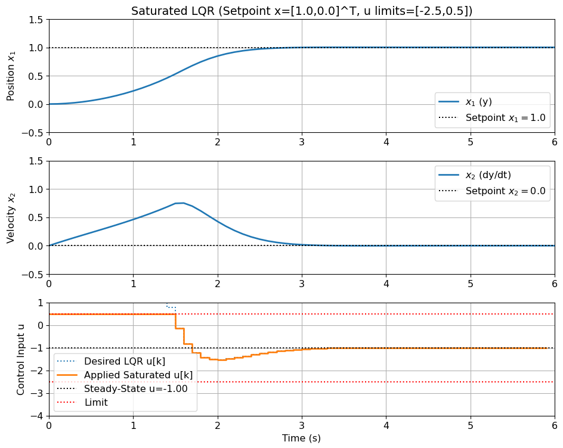
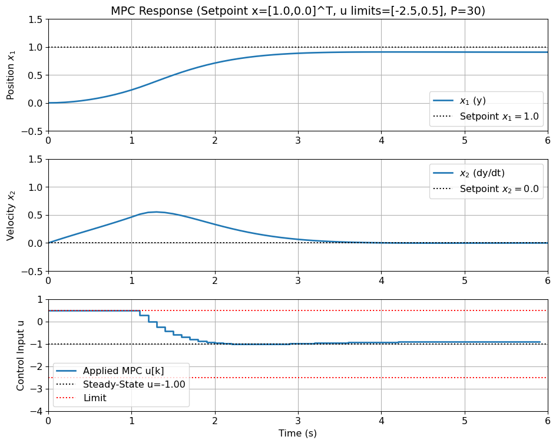

where \delta x = x - \bar x, \delta u = u - \bar u, \delta y = y - \bar y, and the A, B, C, D are the matrices
\begin{align*}
A = \frac{\partial f}{\partial x} \bigg|_{\bar x, \bar u}
B = \frac{\partial f}{\partial u} \bigg|_{\bar x, \bar u}
C = \frac{\partial g}{\partial x} \bigg|_{\bar x, \bar u}
D = \frac{\partial g}{\partial u} \bigg|_{\bar x, \bar u}
\end{align*}
where
\begin{align*}
G = e^{AT}, \quad H = \left[\int_0^T e^{A\tau} d\tau\right] B \quad \left(\text{or, if $A$ is invertible, } H = A^{-1} (G-I)B\right)
\end{align*}
where K is the feedback gain matrix that is designed to arbitrarily move the poles of the closed-loop system
\begin{align*}
x(kT+T) = (G-HK)x(kT)
\end{align*}
for example, by equating the characteristic polynomial of the closed-loop system to a desired polynomial,
\begin{align*}
\det(zI - (G-HK)) = (z - z_1)(z - z_2) \cdots (z - z_n)
\end{align*}
Important
The solution exists if the system is controllable, i.e. if the controllability matrix\;\mathcal{C} = \left[H,\; GH,\; G^2H,\; \ldots,\; G^{n-1}H\right] has full rank (\text{rank}(\mathcal{C})=n).
How do you choose the poles?
t_s - settling time
t_r - rise time
\%OS - percent overshoot
\omega_n - natural frequency
\zeta - damping ratio (or through percent overshoot)
We also saw the Internal Model Principle (e.g. Integral Action) to reject disturbances (or follow references) with a known model (e.g. a step input, a ramp input, a sinusoidal input, etc.). Those still relied on the pole placement approach.
Limitations of Pole placement
Works well for:
SISO systems (Single Input Single Output)
Low order systems (2nd order or when 2nd order dominant, etc.)
Does not work well for:
Higher-order systems (4th order, 5th order, etc.)
MIMO systems (Multiple Input Multiple Output)
Stiff systems (e.g. with very different time constants, e.g. 1ms and 1s)
Highly nonlinear systems (i.e. when the linearisation quickly becomes invalid.)
where \quad x(kT) \in \mathbb{R}^n, \quad u(kT) \in \mathbb{R}, \quad y(kT) \in \mathbb{R}, \quad n > 3
Important
The link between pole locations and desired time-domain response becomes less clear. Arbitrary choices can lead to poor performance or excessive control effort.
How do you choose the best pole locations for a 5th, 10th, or higher-order system?
MIMO Systems
Let’s start with an example.
Consider a simple MIMO system with two states and two inputs:
\begin{align*} x(kT+T) &= \begin{bmatrix} 1 & 0.1 \\ 0 & 0.8 \end{bmatrix} x(kT) + \begin{bmatrix} 1 & 0 \\ 0 & 1 \end{bmatrix} u(kT)
\end{align*}
We want to place the poles at 0.4 and 0.6, by using u(kT) = -Kx(kT), where K = \begin{bmatrix} k_1 & k_2 \\ k_3 & k_4\end{bmatrix}.
The desired characteristic polynomial is given by:
\begin{align*}
(z-0.4)(z-0.6) = z^2 - 1z + 0.24
\end{align*}
When we equate the coefficients, we get:
\begin{align*}
\begin{cases}
(k_1 + k_4 - 1.8) = -1 \\
0.1k_3 - k_4 - 0.8k_1 + k_1k_4 - k_2k_3 + 0.8 = 0.24
\end{cases}
\end{align*}
Important
Note that we have two equations and four unknowns. This means that we have degrees of freedom in the design. We can choose two of the four variables arbitrarily, and then solve for the other two.
This seems like a good idea, but it is not. The problem is that different choices of K, even if they lead to the same eigenvalues, can lead to different eigenvectors. The closed-loop system’s eigenvectors directly affect the response of the system.
Let k_2 = k_3 = 0 and consider the following two cases of gains matrices K_1 and K_2, both of which lead assign the closed-loop eigenvalues to the desired values:
K_1 = \begin{bmatrix} 0.6 & 0 \\ 0 & 0.2 \end{bmatrix}, \quad K_2 = \begin{bmatrix} 0.4 & 0 \\ 0 & 0.4 \end{bmatrix}
Both of which lead to the same eigenvalues we wanted. But let’s simulate the system with both K_1 and K_2.
import numpy as npimport matplotlib.pyplot as pltimport control as ctrl# Create the system matricesG = np.array([[1, 0.1], [0, 0.8]])H = np.array([[1, 0], [0, 1]])C = np.array([[1, 0], [0, 1]]) # Outputs are the statesD = np.array([[0, 0], [0, 0]])K1 = np.array([[0.6, 0], [0, 0.2]]) K2 = np.array([[0.4, 0], [0, 0.4]]) Gcl1 = G - H @ K1 Gcl2 = G - H @ K2Ts =0.1# Sampling time (seconds)# Create the closed-loop LTI systemssys1 = ctrl.ss(Gcl1, H, C, D, Ts) sys2 = ctrl.ss(Gcl2, H, C, D, Ts) # Simulate for initial condition x0 = [1, 0]x0 = np.array([1, 0])t_end =1.5t = np.arange(0, t_end, Ts) t1, y1 = ctrl.initial_response(sys1, T=t, X0=x0)t2, y2 = ctrl.initial_response(sys2, T=t, X0=x0)plt.figure(figsize=(10, 8))plt.plot(t1, y1[0, :], label='K1 - x1', linewidth=3)plt.plot(t1, y1[1, :], label='K1 - x2', linewidth=3)plt.plot(t2, y2[0, :], label='K2 - x1', linestyle='--', linewidth=3) plt.plot(t2, y2[1, :], label='K2 - x2', linestyle='--', linewidth=3) plt.title('Initial Condition Response ($x_0=[1, 0]^T$) with Different K Matrices', fontsize=16) plt.xlabel('Time (steps * dt)', fontsize=14) plt.ylabel('State Values', fontsize=14) plt.legend(fontsize=12)plt.grid(True) plt.show()
x(kT) \in \mathbb{R}^n, \quad u(kT) \in \mathbb{R}^m, \quad y(kT) \in \mathbb{R}^p, \quad n, m, p > 1
Important
For MIMO systems, pole placement is significantly more complex. Specifying only the eigenvalues leaves degrees of freedom in the eigenvectors, which also affect the response. The design process becomes non-unique and less intuitive.
How do you systematically handle interactions between different inputs and outputs?
Performance trade-off
Finally, pole placement does not consider the control effort, not addressing the trade-off between:
regulating the state, by making x(kT), or \delta x(kT)1, small
1 For linearised systems, we defined \delta x = x - \bar x.
regulating required control effort u(kT).
Important
You might achieve desired poles but with impractically large control signals.
Which, like in the following example, can lead to instability.
Linear Controller Failure for a Nonlinear System
Consider a scalar system with cubic nonlinearity, \; \dot{x}(t) = -x(t) + x(t)^3 + u(t).
-x represents a stabilizing linear dynamic.
x^3 is a destabilizing nonlinearity that becomes significant for larger values of |x|.
We want to design a controller u(kT) to stabilize the system at \bar x = 0 (requiring \bar u = 0).
1. Linearise the system around the equilibrium point (\bar x=0, \bar u=0):
The linearised continuous-time system is \;\boxed{\delta\dot{x}(t) = -\delta x(t) + \delta u(t)}.
2. Discretise the system with a sampling time T=0.1s:
\begin{align*} x(kT+T) &= Gx(kT) + Hu(kT), \quad y(kT) = x(kT) \end{align*}
where G = e^{-AT} = 0.905, and H = A^{-1}(G-I)B = 0.095.
The discrete-time (linearised) system is \boxed{x(kT+T) = 0.905x(kT) + 0.095u(kT)}.
3. Design u(kT) = -K x(kT) to place the closed-loop pole of this linearised system at p = 0.5.
3.1 Design through pole placement. The closed-loop is x(kT+T) = (G - H K) x(kT).
We want the closed-loop pole to be equal to p=0.5:
Try to do this through equating the characteristic polynomials: \det(zI - (G-HK)) = (z-p).
\begin{align*} 0.905 - 0.095 K &= 0.5 \\ 0.095 K &= 0.905 - 0.5 = 0.405 \\ K &= \frac{0.405}{0.095} = 4.263 \end{align*}
So, the linear controller designed for the linearized system is \boxed{u(kT) = -4.263 x(kT)}.
4. Test the controller on the original nonlinear system.
Simulate the continuous nonlinear dynamics, but apply the control input u(kT) = -K x(kT) constant over the period [kT, kT + T) (Zero-Order Hold).
Important
Note that the controller was derived for the linearised system, which ignores the x^3 term. The linear model is only accurate for small x (close to the equilibrium x=0). When |x| becomes large, the x^3 term can dominate, and the linear controller may fail.
import numpy as npfrom scipy.integrate import solve_ivpimport matplotlib.pyplot as plt# Set default font size for plotsplt.rcParams['font.size'] =14# 1. Nonlinear System Dynamicsdef nonlinear_system(x, u):# Scalar system dynamics: dx/dt = -x + x^3 + ureturn-x + x**3+ u# 2. Linear Controller Parameters (derived above)Ad =0.905Bd =0.095K =4.263Ts =0.1x_eq =0.0# Equilibrium state# 3. Simulation Setupt_start =0t_end =1.0# Shorter simulation time might be enoughn_steps =int(t_end / Ts)# Initial Conditions to comparex0_small =2x0_large =2.4# Function to run the simulation for a given x0def run_simulation_smooth(x0_val, points_per_interval=10):# Store results for smooth plotting t_history_smooth = [t_start] x_history_smooth = [x0_val]# Store results at discrete intervals for markers and control calc t_history_discrete = [t_start] x_history_discrete = [x0_val] u_history = [] # Control applied over the interval starting at t_history_discrete current_t = t_start current_x_start_of_interval = np.array([x0_val]) # State at beginning of interval# print(f"\nRunning smooth simulation for x(0) = {x0_val}...")for k inrange(n_steps):# Calculate discrete control based on state at START of interval x_deviation = current_x_start_of_interval[0] - x_eq u_k =-K * x_deviation# Optional: Limit control effort# u_k = np.clip(u_k, -u_max, u_max) u_history.append(u_k)# Define ODE function for this interval (constant u_k)def ode_interval(t, y): # y is a 1-element arrayreturn np.array([nonlinear_system(y[0], u_k)])# Simulate one interval Ts, evaluating at multiple points t_eval_interval = np.linspace(current_t, current_t + Ts, points_per_interval, endpoint=True) sol_interval = solve_ivp( ode_interval, (current_t, current_t + Ts), # t_span for the interval current_x_start_of_interval, # Initial state for interval method='RK45', t_eval=t_eval_interval # Evaluate at these points )if sol_interval.status !=0:print(f"Simulation failed at step {k} (t={current_t:.2f}) for x(0)={x0_val}")# Pad history if needed# ... (padding logic can be added if needed) ...break# Update state for next interval START current_x_start_of_interval = sol_interval.y[:, -1] # State at the end current_t += Ts# Store history# Append points *after* the first one to avoid duplication t_history_smooth.extend(sol_interval.t[1:]) x_history_smooth.extend(sol_interval.y[0, 1:])# Store discrete points t_history_discrete.append(current_t) x_history_discrete.append(current_x_start_of_interval[0])# Stop if state diverges excessivelyifabs(current_x_start_of_interval[0]) >10:print(f"State diverging at step {k} (t={current_t:.2f}) for x(0)={x0_val}. Stopping.")breakreturn (np.array(t_history_smooth), np.array(x_history_smooth), # Smooth results np.array(t_history_discrete), np.array(x_history_discrete), # Discrete results np.array(u_history)) # Control history# --- Run both simulations ---(t_small_smooth, x_small_smooth, t_small_discrete, x_small_discrete, u_small) = run_simulation_smooth(x0_small)(t_large_smooth, x_large_smooth, t_large_discrete, x_large_discrete, u_large) = run_simulation_smooth(x0_large)# --- MODIFIED Plotting Section ---plt.figure(figsize=(10, 8))# --- Plot states (Top Plot) ---plt.subplot(2, 1, 1)# Plot smooth trajectoriesplt.plot(t_small_smooth, x_small_smooth, label=f'State x(t) (x0={x0_small})', linewidth=2)plt.plot(t_large_smooth, x_large_smooth, label=f'State x(t) (x0={x0_large})', linewidth=2, linestyle='--')plt.axhline(0, color='black', linewidth=0.5, linestyle=':')plt.ylabel('State x')plt.title('Scalar Nonlinear System with Linear Controller (Pole @ 0.5)')plt.grid(True)plt.legend()# Adjust ylim automatically or set manually if neededylim_min =min(np.nanmin(x_small_smooth), np.nanmin(x_large_smooth), -1) -0.5ylim_max =max(np.nanmax(x_small_smooth), np.nanmax(x_large_smooth), 1) +0.5plt.ylim(ylim_min, ylim_max)# --- Plot control inputs (Bottom Plot - using stairs) ---plt.subplot(2, 1, 2)# Ensure simulation ran successfully and generated historyfinal_idx_small =len(u_small)if final_idx_small >0: plt.stairs(u_small, t_small_discrete, label=f'Control u[k] (x0={x0_small})', baseline=None, linewidth=2, linestyle='--')final_idx_large =len(u_large)if final_idx_large >0: plt.stairs(u_large[:final_idx_large-1], t_large_discrete, label=f'Control u[k] (x0={x0_large})', baseline=None, linewidth=2, linestyle='--')plt.ylabel('Control Input u')plt.xlabel('Time (s)')plt.grid(True)plt.legend()plt.tight_layout()plt.show()
Simulation failed at step 2 (t=0.20) for x(0)=2.4
Optimal Control
What is optimal?
Optimal means best. But best in terms of what?
Best in terms of performance?
Best in terms of low control effort?
Best in terms of a (generalised) cost?
Key Idea:
Instead of choosing pole locations, you define what constitutes good performance via a cost functionJ.
The Discrete-Time Optimal Control Problem
Consider the System Dynamics1, \; x(kT+T) = Gx(kT) + Hu(kT), \quad x(0) = x_0.
1The general concept extends to nonlinear systems, but through methods that are beyond the scope of this course.
We want to find u(kT) = -Kx(kT) that minimizes the Cost Function / Performance Index2:
2 This is an infinite horizon cost function, where the state penalty matrix Q and the control penalty matrixR define the cost.
The solution to this problem is the LinearQuadraticRegulator(LQR).
Additional Reading
For more information about the general optimal control problem, see the additional readings on Canvas.
The Discrete Linear Quadratic Regulator (DLQR)
The gain K that minimizes the cost function1, subject to the system dynamics2 is given by:
K = (R + H^\intercal P H)^{-1} H^\intercal P G,
which depends on the unique, symmetric, positive semi-definite solution S of the Discrete Algebraic Riccati Equation (DARE):
P = G^\intercal PG - (G^\intercal PH)(R+H^\intercal PH)^{-1}(H^\intercal PG) + Q,
Remember that Pmust be unique, symmetric, positive semi-definite, that is P=P^\intercal\succeq 0.
Note
The full derivation of the optimal control gain K formula is beyond the scope of the course. If you’re curious, start by investigating the Bellman’s Principle of Optimality (Dynamic Programming).
Design of DLQR Controllers
The design of DLQR controllers is based on the following steps:
Check controllability of x(KT+T) = Gx(kT) + Hu(kT).
Solve the DARE to find the positive semi-definite symmetricP.
Compute the gain matrix K = (R + H^\intercal P H)^{-1} H^\intercal P G.
Implement the controller u(kT) = -Kx(kT).
Test the controller performance and adjust Q and R as necessary.
Existence and Stability of the Solution
We need to check if the solution to the DARE exists and is stable.
Questions
Does a unique solution to the DARE always exist?
Does the resulting controller guarantee stability?
Turns out that we need the following conditions.
Conditions for Stabilizing DLQR Solution:
Controllability: Can the controller move all unstable poles of the system?
Observability: Can all unstable models be observed by the cost function?
The DLQR Stability Theorem
Theorem: DLQR Stability Theorem
Assume R \succ 0 and Q \succeq 0. Let Q=V^TV (where V might not be unique).
If the following conditions hold:
The pair (G,H) is controllable.
The pair (G,V) is observable1.
1Note that this is not the same as the observability of the system, as what’s important is observability of states by the cost function.
Then:
A unique solution P=P^\intercal \succeq 0 to the DARE exists.
The resulting controller closed-loop system is stable.
Simple Example of DLQR Design
Let’s consider a simple example of a DLQR design and solve it “by hand”. Consider again the scalar system with cubic nonlinearity and its discrete linearised version,
Controllability: \mathcal{C} = [H,\; GH] = [0.095,\; 0.086475] has full rank (\text{rank}(\mathcal{C})=1).
Cost Matrices: Select Q = 10.0 and R = 0.1.
Observability: \mathcal{O} = [V,\; VG]^\intercal, where V = \sqrt{Q}. Then \mathcal{O} = [3.162,\; 2.857]^\intercal, which has full rank.
Solution P=P^\intercal\succeq 0 of the DARE: P - G^\intercal P G + (G^\intercal P H)(R + H^\intercal P H)^{-1}(H^\intercal P G) = Q
\begin{align*}
P - G^2 P + \frac{(G H P)^2}{R + H^2 P} &= Q \\
(P - G^2 P)(R + H^2 P) + G^2 H^2 P^2 &= Q (R + H^2 P) \\
P R + H^2 P^2 - G^2 P R - Q R - Q H^2 P &= 0 \\
(H^2) P^2 + (R - G^2 R - Q H^2) P + (- Q R) &= 0 \\
0.009 P^2 -0.0722 P - 1 &= 0 \\
P = 15.2571 \text{ or } P = -7.2624
\end{align*}
Pick the positive semi-definite solution: P = 15.2571.
Compute the gainK = (R + H^\intercal P H)^{-1} H^\intercal P G = 5.519.
import numpy as npfrom scipy.integrate import solve_ivpfrom scipy.linalg import solve_discrete_are # Import DARE solverimport matplotlib.pyplot as plt# Set default font size for plotsplt.rcParams['font.size'] =14# 1. Nonlinear System Dynamicsdef nonlinear_system(x, u):# Scalar system dynamics: dx/dt = -x + x^3 + ureturn-x + x**3+ u# 2. Linear Controller Parameters (derived above)Ad =0.905Bd =0.095K =4.263Ts =0.1x_eq =0.0# Equilibrium state# 3. Simulation Setupt_start =0t_end =1.0# Shorter simulation time might be enoughn_steps =int(t_end / Ts)# Initial Conditions to comparex0_small =2x0_large =2.4# --- DLQR Controller Design ---Qd =10.0# State weightRd =0.1# Control weight# Solve Discrete Algebraic Riccati Equation (DARE)# Need to pass arguments as 2D arrays for the solverA_dare = np.array([[Ad]])B_dare = np.array([[Bd]])Q_dare = np.array([[Qd]])R_dare = np.array([[Rd]])S = solve_discrete_are(A_dare, B_dare, Q_dare, R_dare)S_scalar = S[0, 0] # Extract scalar value# Calculate DLQR gain Kd# Kd = (R + B'SB)^-1 B'SAKd_term1 = R_dare + B_dare.T @ S @ B_dareKd_term2 = B_dare.T @ S @ A_dareKd = np.linalg.inv(Kd_term1) @ Kd_term2K_lqr = Kd[0, 0] # Extract scalar gain# Check closed-loop stability for the linear systemAcl_lqr = Ad - Bd * K_lqrprint(f"DARE Solution S = {S_scalar:.3f} (for Q={Qd}, R={Rd})")print(f"DLQR Gain K = {K_lqr:.3f}")ifabs(Acl_lqr) <1:print(f"Linear Closed-Loop Pole = {Acl_lqr:.3f}. (STABLE)")else:print(f"Linear Closed-Loop Pole = {Acl_lqr:.3f}. (UNSTABLE)")# --- End DLQR Design ---# Function to run the simulation (same as before, just uses K_lqr)def run_simulation(x0_val, K_gain): t_history = [t_start] x_history = [x0_val] u_history = [] current_t = t_start current_x = np.array([x0_val]) # State needs to be arrayfor k inrange(n_steps): x_deviation = current_x[0] - x_eq u_k =-K_gain * x_deviation u_history.append(u_k)def ode_interval(t, y):return np.array([nonlinear_system(y[0], u_k)]) t_interval = (current_t, current_t + Ts) sol_interval = solve_ivp( ode_interval, t_interval, current_x, method='RK45', t_eval=[current_t + Ts] )if sol_interval.status !=0:print(f"Simulation failed at step {k} (t={current_t:.2f}) for x(0)={x0_val}")# Pad history... failed_steps = n_steps - k t_history.extend(np.linspace(current_t + Ts, t_end, failed_steps)) x_history.extend([np.nan] * failed_steps) u_history.extend([np.nan] * failed_steps)break current_t += Ts current_x = sol_interval.y[:, -1] t_history.append(current_t) x_history.append(current_x[0])ifabs(current_x[0]) >10: # Stop if divergingprint(f"State diverging at step {k} (t={current_t:.2f}) for x(0)={x0_val}. Stopping.") failed_steps = n_steps - k -1if failed_steps >0: t_history.extend(np.linspace(current_t + Ts, t_end, failed_steps)) x_history.extend([np.nan] * failed_steps)breakreturn np.array(t_history), np.array(x_history), np.array(u_history)# Run both simulations with DLQR gaint_small, x_small, u_small = run_simulation(x0_small, K_lqr)t_large, x_large, u_large = run_simulation(x0_large, K_lqr)# 4. Plotting Resultsplt.figure(figsize=(10, 8))plt.subplot(2, 1, 1)plt.plot(t_small, x_small, label=f'State x(t) (x0={x0_small})', linewidth=2)plt.plot(t_large, x_large, label=f'State x(t) (x0={x0_large})', linewidth=2, linestyle='--')plt.axhline(0, color='black', linewidth=0.5, linestyle=':')plt.ylabel('State x')plt.title(f'Scalar Nonlinear System with DLQR Controller (Q={Qd}, R={Rd})')plt.grid(True)plt.legend()plt.ylim(min(np.nanmin(x_small), np.nanmin(x_large), -1) -0.5, max(np.nanmax(x_small), np.nanmax(x_large), 1) +0.5)plt.subplot(2, 1, 2)final_idx_small =len(u_small)if final_idx_small >0:# Use step plot for control signal visualization plt.step(t_small[:final_idx_small], u_small[:final_idx_small], where='post', label=f'Control u[k] (x0={x0_small})', linewidth=2)final_idx_large =len(u_large)if final_idx_large >0: plt.step(t_large[:final_idx_large], u_large[:final_idx_large], where='post', label=f'Control u[k] (x0={x0_large})', linewidth=2, linestyle='--')plt.ylabel('Control Input u')plt.xlabel('Time (s)')plt.grid(True)plt.legend()plt.tight_layout()plt.show()
DARE Solution S = 15.257 (for Q=10.0, R=0.1)
DLQR Gain K = 5.519
Linear Closed-Loop Pole = 0.381. (STABLE)
MIMO Example of DLQR Design
Consider the MIMO system with two states and two inputs:
\begin{align*} x(kT+T) &= \begin{bmatrix} 1 & 0.1 \\ 0 & 0.8 \end{bmatrix} x(kT) + \begin{bmatrix} 1 & 0 \\ 0 & 1 \end{bmatrix} u(kT) \\ y(kT) &= Cx(kT) + Du(kT) \end{align*}
import numpy as npimport matplotlib.pyplot as pltimport scipy.linalg as linalgimport control as ctrl# Create the system matricesG = np.array([[1, 0.1], [0, 0.8]])H = np.array([[1, 0], [0, 1]])C = np.array([[1, 0], [0, 1]]) # Outputs are the statesD = np.array([[0, 0], [0, 0]])# Pole placement for MIMO systemK1 = np.array([[0.6, 0], [0, 0.2]]) K2 = np.array([[0.4, 0], [0, 0.4]]) # QLQR design for MIMO systemQ = np.array([[10, 0], [0, 10]]) # State weight matrixR = np.array([[0.1, 0], [0, 0.1]]) # Control weight matrix# Solve the Discrete Algebraic Riccati Equation (DARE)S = linalg.solve_discrete_are(G, H, Q, R) # S is the solution to the DARE# Calculate DLQR gain KK3 = np.linalg.inv(R + H.T @ S @ H) @ (H.T @ S @ G)print(f"K3 = [{K3[0, 0]:.3f}, {K3[0, 1]:.3f}; {K3[1, 0]:.3f}, {K3[1, 1]:.3f}]")print(f"eig(G - H @ K3) = {np.linalg.eigvals(G - H @ K3)}")# Compute the closed-loop system matricesGcl1 = G - H @ K1 Gcl2 = G - H @ K2Gcl3 = G - H @ K3Ts =0.1# Sampling time (seconds)# Create the closed-loop LTI systemssys1 = ctrl.ss(Gcl1, H, C, D, Ts) sys2 = ctrl.ss(Gcl2, H, C, D, Ts) sys3 = ctrl.ss(Gcl3, H, C, D, Ts)# Simulate for initial condition x0 = [1, 0]x0 = np.array([1.5, 0.5])t_end =1.5t = np.arange(0, t_end, Ts) t1, y1 = ctrl.initial_response(sys1, T=t, X0=x0)t2, y2 = ctrl.initial_response(sys2, T=t, X0=x0)t3, y3 = ctrl.initial_response(sys3, T=t, X0=x0)plt.figure(figsize=(10, 8))plt.plot(t1, y1[0, :], label='K1 - x1', linewidth=3)plt.plot(t1, y1[1, :], label='K1 - x2', linewidth=3)plt.plot(t2, y2[0, :], label='K2 - x1', linestyle='--', linewidth=3) plt.plot(t2, y2[1, :], label='K2 - x2', linestyle='--', linewidth=3) plt.plot(t3, y3[0, :], label='K3 - x1', linestyle=':', linewidth=3) plt.plot(t3, y3[1, :], label='K3 - x2', linestyle=':', linewidth=3) plt.title('Initial Condition Response ($x_0=[1, 0]^T$) with Different K Matrices', fontsize=16) plt.xlabel('Time (steps * dt)', fontsize=14) plt.ylabel('State Values', fontsize=14) plt.legend(fontsize=12)plt.grid(True) plt.show()
The relative size (Q/R ratio) affects the trade-off between state regulation and control effort.
Increasing Q relative to R\rightarrow increases the penalty on state deviation
faster state convergence,
higher control effort.
Increasing R relative to Q\rightarrow increases the penalty on control effort
slower state convergence,
lower control effort.
Quick Example of DLQR Tuning
Code
# Iterate over different Q values and simulate the systemQ_values = [1, 10, 50, 100] # Different state penalty valuesR =0.1# Fixed control penaltyAd =0.905Bd =0.095Ts =0.1x0 =2# Initial condition# Store results for plottingresults = []for Q in Q_values:# Solve DARE for each Q S = solve_discrete_are(np.array([[Ad]]), np.array([[Bd]]), np.array([[Q]]), np.array([[R]])) K = np.linalg.inv(R + Bd**2* S) @ (Bd * S * Ad) K = K[0, 0] # Extract scalar gain# Simulate the system t_history = [0] x_history = [x0] current_x = x0for k inrange(50): # Simulate for 50 steps u =-K * current_x current_x = Ad * current_x + Bd * u t_history.append((k +1) * Ts) x_history.append(current_x) results.append((Q, t_history, x_history))# Plot resultsplt.figure(figsize=(10, 6))for Q, t_history, x_history in results: plt.plot(t_history, x_history, label=f"Q={Q}", linewidth=2)plt.title("DLQR State Response for Different Q Values")plt.xlabel("Time (s)")plt.ylabel("State x")plt.legend()plt.grid(True)plt.show()
Limitations of LQR: Control Saturation
Consider the system \; \ddot x = x - c\dot x + u, where u_{\min} \le u(kT) \le u_{\max}.
DLQR Gain for error K = [[8.76224795 4.36193866]]
Control Limits: [-2.5, 0.5]
Simulation loop time: 0.03 s

# Scenario 3: MPC for Nonzero Regulation (Damped 2nd Order System)import numpy as npfrom scipy.integrate import solve_ivpfrom scipy.linalg import solve_discrete_are, expmfrom scipy.signal import cont2discreteimport cvxpy as cp # Requires cvxpy and a solver like OSQPimport matplotlib.pyplot as pltimport time# print("--- Running Scenario 3: MPC (Nonzero Setpoint, Damped System) ---")# --- 1. System Definition ---c_damping =0.5Ac = np.array([[0., 1.], [1., -c_damping]])Bc = np.array([[0.], [1.]])n_states = Ac.shape[0]m_inputs = Bc.shape[1]def system_ode(t, x, u, Ac_mat, Bc_mat): u_val = u if np.isscalar(u) else u[0] dxdt = Ac_mat @ x + Bc_mat @ np.array([u_val])return dxdt.flatten()# --- 2. Discretization ---Ts =0.1Ad, Bd, _, _, _ = cont2discrete((Ac, Bc, np.eye(n_states), np.zeros((n_states, m_inputs))), Ts, method='zoh')# print("--- Discrete Model ---")# print(f"Ad = \n{Ad}")# print(f"Bd = \n{Bd}")# --- 3. Setpoint ---x_ref = np.array([[1.0], [0.0]]) # Target state y=1, y_dot=0 (use column vector shape)try: u_ref_vec = np.linalg.pinv(Bd) @ (np.eye(n_states) - Ad) @ x_ref u_ref = u_ref_vec[0,0] # Extract scalar# print(f"Setpoint: x_ref = {x_ref.T}, requires discrete u_ref = {u_ref:.3f} (cont. u_ref=-1.0)")exceptExceptionas e:print(f"Could not calculate discrete u_ref: {e}. Using continuous u_ref.") u_ref =-x_ref[0,0] # Use continuous calculation# --- 4. MPC Setup ---P =30# Prediction Horizon# Use same base weights as LQR example, but consider tuning R_mpcQ_mpc = np.diag([1.0, 0.1])# R_mpc = np.array([[0.01]]) # Original aggressive LQR RR_mpc = np.array([[0.1]]) # Use less aggressive R for MPC? Try this.# Calculate terminal weight Qf from DARE solution S using MPC weightstry: S = solve_discrete_are(Ad, Bd, Q_mpc, R_mpc) Qf_mpc = S# print(f"Using terminal weight Qf=S based on MPC Q/R: \n{Qf_mpc}")exceptExceptionas e:print(f"DARE solve failed ({e}), using Qf=Q"); Qf_mpc = Q_mpc# Constraintsu_min =-2.5u_max =0.5print(f"Control Limits: [{u_min}, {u_max}]")# --- 5. CVXPY Optimization Problem Setup ---U = cp.Variable((m_inputs, P), name='U')x_k_param = cp.Parameter(n_states, name='x_k_param') # Current state parametercost =0.0constraints = []x_pred = x_k_param # Use parameter for current statefor t inrange(P):# Penalize deviation from reference state & absolute control input cost += cp.quad_form(x_pred - x_ref.flatten(), Q_mpc) + cp.quad_form(U[:, t], R_mpc) x_next = Ad @ x_pred + Bd @ U[:, t] constraints += [U[:, t] >= u_min, U[:, t] <= u_max] x_pred = x_next# Terminal cost penalizes deviation from x_refcost += cp.quad_form(x_pred - x_ref.flatten(), Qf_mpc)objective = cp.Minimize(cost)problem = cp.Problem(objective, constraints)print("MPC CVXPY Problem defined.")# --- 6. Simulation Setup ---t_start =0t_end =6.0n_steps =int(t_end / Ts)x0 = np.array([0.0, 0.0]) # Initial condition# --- Helper function for interval simulation ---def simulate_interval(ode_func, t_start, x_start, duration, control_val): t_eval_interval = [t_start + duration] sol_interval = solve_ivp( ode_func, (t_start, t_start + duration), x_start, method='RK45', t_eval=t_eval_interval, args=(control_val,) )if sol_interval.status !=0: returnNone, Falsereturn sol_interval.y[:, -1], True# --- 7. Simulation Loop ---t_history = [t_start]x_history = [x0]u_history = [] # Applied MPC controlcurrent_t = t_startcurrent_x = x0.copy()success_run =Trueinfeasibility_count =0start_sim_time = time.time()# print("Running simulation...")for k inrange(n_steps): x_k_param.value = current_x # Update parameter u_k = u_ref # Default if solver failstry: problem.solve(solver=cp.OSQP, warm_start=True, verbose=False)if problem.status == cp.OPTIMAL or problem.status == cp.OPTIMAL_INACCURATE: u_k = U.value[0, 0]else:print(f"MPC Warning: Solver status {problem.status} at k={k}") infeasibility_count +=1if U.value isnotNone: u_k = U.value[0, 0]if problem.status == cp.INFEASIBLE:print("MPC Problem is infeasible. Stopping."); success_run =False;breakexceptExceptionas e:print(f"MPC Solver failed at k={k}: {e}"); infeasibility_count +=1# Apply saturation as safety/clip numerical tolerances u_k_sat = np.clip(u_k, u_min, u_max) u_history.append(u_k_sat)def ode_mpc_interval(t, y, u_val):return system_ode(t, y, u_val, Ac, Bc) next_x, success = simulate_interval(ode_mpc_interval, current_t, current_x, Ts, u_k_sat)ifnot success:print(f"ODE solver failed at t={current_t:.2f}") success_run =False;break current_t += Ts current_x = next_x t_history.append(current_t) x_history.append(current_x.copy())if np.max(np.abs(current_x)) >100: # Divergence checkprint(f"State diverging excessively at t={current_t:.2f}. Stopping.") success_run =False;breakprint(f"MPC Simulation loop time: {time.time() - start_sim_time:.2f} s")if infeasibility_count >0: print(f"Warning: MPC Solver non-optimal status {infeasibility_count} times.")# --- 8. Plotting ---if success_run: t_history = np.array(t_history) x_history = np.array(x_history).T u_history = np.array(u_history) n_plot =len(u_history)# Use consistent plot limits from Block 1 & 2 (or adjust) xlims = (t_start, t_end) ylims_x1 = (-0.5, 1.5) ylims_x2 = (-0.5, 1.5) ylims_u = (-4, 1) # Use same limits plt.figure("MPC (Nonzero Setpoint, Damped)", figsize=(10, 9)) plt.rcParams.update({'font.size': 12}) plt.subplot(3, 1, 1) plt.plot(t_history[:n_plot+1], x_history[0,:n_plot+1], label='$x_1$ (y)', lw=2) plt.axhline(x_ref[0], color='k', linestyle=':', label=f'Setpoint $x_1={x_ref[0,0]}$') plt.title(f'MPC Response (Setpoint x=[{x_ref[0,0]},{x_ref[1,0]}]^T, u limits=[{u_min},{u_max}], P={P})') plt.ylabel('Position $x_1$') plt.ylim(ylims_x1); plt.xlim(xlims); plt.grid(True); plt.legend() plt.subplot(3, 1, 2) plt.plot(t_history[:n_plot+1], x_history[1,:n_plot+1], label='$x_2$ (dy/dt)', lw=2) plt.axhline(x_ref[1], color='k', linestyle=':', label=f'Setpoint $x_2={x_ref[1,0]}$') plt.ylabel('Velocity $x_2$') plt.ylim(ylims_x2); plt.xlim(xlims); plt.grid(True); plt.legend() plt.subplot(3, 1, 3) plt.step(t_history[:n_plot], u_history[:n_plot], where='post', label='Applied MPC u[k]', lw=2) plt.axhline(u_ref, color='k', linestyle=':', label=f'Steady-State u={u_ref:.2f}') plt.axhline(u_max, color='r', linestyle=':', label='Limit') plt.axhline(u_min, color='r', linestyle=':') plt.ylabel('Control Input u') plt.xlabel('Time (s)') plt.ylim(ylims_u); plt.xlim(xlims); plt.grid(True); plt.legend() plt.tight_layout() plt.show()else:print("Simulation failed, not plotting.")
Control Limits: [-2.5, 0.5]
MPC CVXPY Problem defined.
MPC Simulation loop time: 18.55 s

Model Predictive Control (MPC)
MPC is a powerful control strategy that uses an optimization problem to determine the control input at each time step. It is particularly useful for systems with constraints and nonlinearities.
Tip
While LQR solves the infinite-horizon optimal control problem, MPC solves a finite-horizon optimization problem at each time step (this horizon is MPC’s prediction horizon, i.e. how many steps ahead it looks).
How MPC Works
MPC solves an optimization problem at each time step to find the optimal control sequence over a finite horizon.
The first control input of the optimal sequence is applied to the system.
The process is repeated at the next time step, using the current state as the new initial condition.
MPC vs LQR:
MPC handles constraints (e.g. input saturation, state constraints, rate of change limits, etc).
MPC is more complex and computationally intensive than LQR.
MPC’s performance depends on the accuracy of the system model.